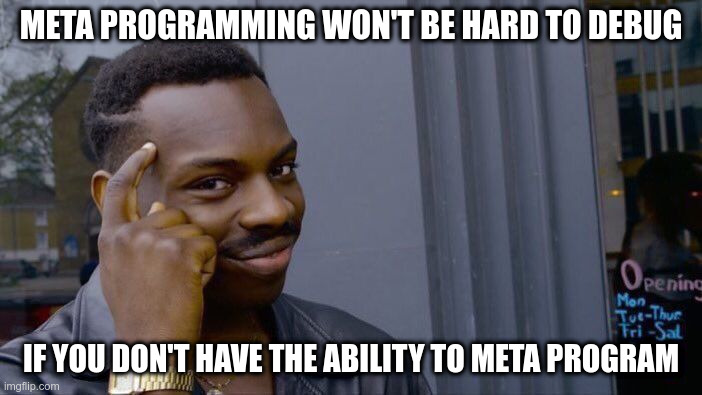
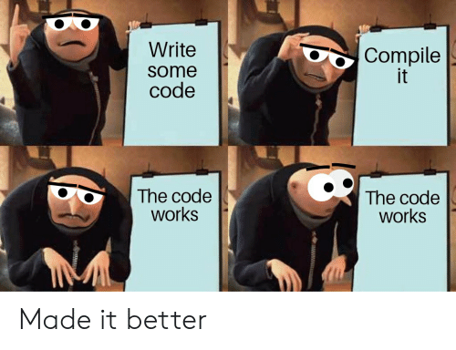

Posted on April 17, 2020
by contrun
Table of Contents
引子
并发问题
并发很难。为什么不找一些聪明人, once and for all 解决掉这个问题呢？
- 我们创造了很多 lock-free, wait-free 的数据结构，
- 我们创造了 event loop，
- 我们创造了 actor model，
- 我们创造了 reactive streams。
- 我们创造了 communicating sequential processes。

一个例子
- Alice 想要给 Bob 转一笔帐(是的，这一次他们明文转了)
- 银行不希望凭空产生出新的美刀(只有美联储才能印币)
- Bob 不希望少收到一分钱
navie 实现 1
def transfer(sender: Account, receiver: Account, much: Int) {
while (sender.balance < much) {}
receiver.balance.update(_ + much)
sender.balance.update(_ - much)
}- 只有在 sender 余额足够多的时候才发起转账
- 整个转账过程是 atomic 的
- 不能保证跨 channel, actor 的操作是线程安全
navie 实现 2
回到 good old days。
def transfer(sender: Account, receiver: Account, much: Int) {
while (sender.balance < much) {}
sender.lock()
sender.balance.update(_ - much)
sender.unlock()
receiver.lock()
receiver.balance.update(_ + much)
receiver.unlock()
}- Dead lock，另一个并发转账
transfer(receiver, sender, much2)可能会导致死锁 - 解决方案，让所有帐号编程一个全序集，规定锁的顺序
- lost wake up，成功执行
sender.lock()的时候，sender的余额可能已经发生变化 - 解决方案，请几个小心一点的程序员，多写个 while
- ABA problem，另外一些意想不到的东西已经发生变化，尽管看起来值还是一样的
- 解决方案，请几个小心一点的程序员，
AtomicStampedReference - Lousy abstraction，poor modularity
navie 想法
- 为什么不用数据库呢？如果你也用过数据库。
- 这是什么魔法？
软件事物内存
- 欢迎来到一个全新的魔法世界
- 软件事物内存的原理和实现和数据库事务基本相同，乐观锁
- 将改动保存在tls，检查数据是否有效，如有效则commit，否则 sudo commit
- 软件事物内存可以带来数据库事物 acid 保证中的 aci
- STM有一个无与伦比的优势——composable
一个新的魔术
def transfer(sender: TRef[Int], receiver: TRef[Int], much: Int): UIO[Unit] =
STM.atomically {
for {
balance <- sender.get
_ <- STM.check(balance >= much) // block until
_ <- receiver.update(_ + much)
_ <- sender.update(_ - much)
} yield ()
}- 去掉函数签名里面怪异的类型，和怪异的
STM.atomically
def transfer(sender: Account, receiver: Account, much: Int) {
while (sender.balance < much) {}
receiver.balance.update(_ + much)
sender.balance.update(_ - much)
}- 可以看到这和之前的代码并无二致。
- 但是 It just works (TM).
魔鬼隐藏在细节中
- commit 之前要检查 values 是否依旧有效
- commit 要 linearizable，不能留下任何 inconsistent 的状态
- 不是所有改动都能 rollback
ZIO/STM 介绍
ZIO 介绍
- touted as A type-safe, composable library for async and concurrent programming in Scala
- 实际上是一个 effects library
ZIO[R, E, A], 给定一个类型为R的请求，得到类型为E的错误，或者类型为A的正确结果Rfor requests，可以理解成 resource- 不同的场景需要不同的资源，Console with Config with Database，带来不同的 effects
ZIO.provide某个资源可以消除对某个资源的依赖，可以理解成依赖注入，或者是生成一个含有需要资源的闭包
val clockLayer: ZLayer[Any, Nothing, Clock] = ???
val zio: ZIO[Clock with Random, Nothing, Unit] = ???
val zio2 = zio.provideSomeLayer[Random](clockLayer)- free at last，你会希望使用的都是 pure functions，没有任何 effects 的纯函数
a match in the heaven.
- 纯函数式编程可以将纯函数和有副作用的 actions, effects 隔离开来
- 纯函数的世界里没有冠状病毒，没有死亡，可以任意回滚
- 当我们谈论函数式编程的时候我们在谈论什么？函数是一等公民？
- 更重要的是 declarative programming
- 我 declare 我要改变sender的余额，我要改变receiver的余额。请帮我把这两个事务复合成一个事务
def transfer(sender: Account, receiver: Account, much: Int) {
while (sender.balance < much) {}
sender.lock()
sender.balance.update(_ - much)
sender.unlock()
receiver.lock()
receiver.balance.update(_ + much)
receiver.unlock()
}def transfer(sender: TRef[Int], receiver: TRef[Int], much: Int): UIO[Unit] =
STM.atomically {
for {
balance <- sender.get
_ <- STM.check(balance >= much) // block until
_ <- receiver.update(_ + much)
_ <- sender.update(_ - much)
} yield ()
}- declaration as an abstract barrier
- 更加地 composable，更加地 modular，更加地 robust
Yet another certainly harmful monad tutorial
- 所以 ZIO 里面的 STM 到底是个啥？是个 monad。
UIO[A]理解成为计算过程的抽象，这个过程执行完毕可以得到一个类型为A的结果aflatMap(ua: UIO[A], f: (A -> UIO[B])): UIO[B]- 从计算过程
UIO[A]得到结果a，然后喂给(A -> UIO[B])得到UIO[B]，最终执行得到结果B - 两个事务的组合其实也是如此
- 实现上来说我们需要定义，怎么从一个
USTM[Int]里面取出Int(balance <- sender.get) - 怎么样把
USTM[A] -> (A -> USTM[B)]变成一个USTM[B](STM.check(balance >= much)==) - declarative programming 让我们不需要管这么多细节，我们先看下这样的抽象的威力
Dining philosophers
- 要让每一个哲学家吃上意大利面，即使他是苏格拉底，fuck historians
- 要让每个哲学家用两个叉子吃意大利面
- 吃意大利面的精髓在于不要让拿叉子的过程打环
- 其实这个之前说的转账死锁就是两个哲学家在吃意大利面打环了
- 如何用 STM 解决 Dining philosophers 问题？
val leftFork = forks(n)
val rightFork = forks((n + 1) % forks.length)
for {
_ <- leftFork.acquire()
_ <- rightFork.acquire()
_ <- queue.offer(s"Philosopher $n haz forks")
_ <- rightFork.release()
_ <- leftFork.release()
} yield ()- 你应该对这样的东西感到极端 skeptical

- 因为这种写法看起来已经打环
- It just works (TM).
- 我虽然不知道它是怎么工作的，但它就能工作！
- 真正的魔法是在于 STM 这个 monad 的定义
- declarative programming or concurrency for dummies
- 就算是成功 acquire leftFork，也不会一直占用 leftFork
- 如果出现xx会如何自动回滚，自动“释放占用的资源”，自动重试
rightFork.acquire = rightFork.tryAcquire orElse (rollback and retry)
一些实现细节
- 我们这个啊，是 high level review

STM vs IO
- 两者都是 monad，都有 flatMap， for comprehension
- commit transaction，让其他 STM 看到执行结果是一种副作用
- 为了隔离开有副作用的 action，特地构造了 STM 这个 monad
- STM -> IO，
atomically
STM.atomically(
leftFork.withPermit(rightFork.withPermit(queue.offer(s"Philosopher $n haz forks")))
)Compare and Set
- compareAndSet, 几乎所有的 lock-free 数据结构之母
def getAndSet(a: A): A {
while (true) {
current = value.get
loop = !value.compareAndSet(current, a)
if (!loop) return current
}
}- 获取当前的值，对比是否依旧是当前值，如果是，用新的值覆盖当前值，如果不是，重试
- 获取当前值，执行操作，验证当前值的有效性，如果无效，回滚 transaction 并重试，否则commit
- compareAndSet 是 atomic 的，我们需要保证我们的整个过程是 linerizable 的
回滚
- 运行 atomically 的时候新建一个 thread local 的日志
- 日志记录了本次 transaction 访问的所有 atomic reference 及其当前值
- 所有改动都是 isolated, thread local，其他 transaction 无感知
- 回滚操作只需要清空日志
验证并 commit
- 对 STM monad 的 interpretation 相当于依次执行 continuation
val leftFork = forks(n)
val rightFork = forks((n + 1) % forks.length)
for {
_ <- leftFork.acquire()
_ <- rightFork.acquire()
_ <- queue.offer(s"Philosopher $n haz forks")
_ <- rightFork.release()
_ <- leftFork.release()
} yield ()- 依次执行 continuation 的时候会将访问的所有 atomic reference 记录到 expected
- 验证过程就是验证所有的 atomic reference 的 expecetd == current
- 为了保证 linearizable 或者其他的一致性条件，可以使用下面的 concurrency control
Coarse grain concurrency control
- sqlite way
- 锁了整个数据库
- two phase lock
Fine grain concurrency control
- postgresql way
- 锁了对应的 row
- multi version concurrency control
- 验证的时候，顺便锁了 write set 里面的 atomic reference
谢谢
一点小小的搬运工作，谢谢大家。
参考资料
- 上面例子的源代码
- 可以复合的 STM 的主要参考论文(用的 Haskell)
- 一本关于 wait-less, lock-less 数据结构的教科书，最后一章是事务内存
- 另外一个 STM 介绍，用 STM 来解决圣诞老人问题
- Clojure stm 介绍
- 在硬件层面上事务内存的论文使用 STM 实现一些常用并发数据结构
- ZIO STM 的介绍，以及使用 STM 来实现一些常用的并发数据结构
- https://www.oreilly.com/library/view/parallel-and-concurrent/9781449335939/
- 没有回答标题的 why，会 Walk through haskell stm
- haskell runtime 里的 stm